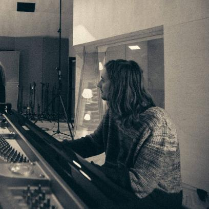

un peu plus d'une minute
Enregistré et filmé en live à la HKB de Berne, août 2026.
en situation
Filmé pendant de vraies soirées : dans le lobby du Michelberger Hotel à Berlin, 2023, et au piano-bar Chat d'Or, 2024.
Live in the Lobby
michelberger hotel · berlin · 2023Chat d'Or
piano bar · 2024piano solo
Standards de jazz, bossa nova et quelques compositions personnelles, dont Leaves.
Autumn Leaves
joseph kosma500 Miles High
chick coreaLeaves
compositionlaguna breeze
Quincy chante et joue de la guitare, je suis au piano. Surtout des chansons brésiliennes et de la soul, et parfois un Pink Floyd joué tout en lenteur.
Água de Beber
antônio carlos jobimWhat's Going On
marvin gayeAnother Brick in the Wall
pink floydcet hiver
Disponible dès décembre, en Valais, dans le canton de Vaud et à Berne. Idéalement une soirée fixe par semaine, mais aussi des soirées ponctuelles ou des événements privés.

Solo
Sur votre piano, à queue ou droit, ou j'apporte un piano de scène. En général deux ou trois sets de 45 minutes, de l'apéritif au dîner.
Duo
Piano, chant et guitare. Idéal pour les bars, l'après-ski et les fêtes, quand un peu plus d'énergie fait du bien.
quelques morceaux
Une demande particulière ? Il suffit de demander.
- Autumn LeavesKosma
- 500 Miles HighCorea
- Água de BeberJobim
- InsensatezJobim
- DesafinadoJobim
- TristeJobim
- What's Going OnGaye
- Another Brick in the WallPink Floyd
- LeavesDayer